1Toyota Research Institute 2Woven by Toyota 3Cornell University
The action prior is the only thing we vary. Left: samples drawn directly from two priors on the DumpVegetables task from LBM Eval. The Gaussian (𝒵) produces incoherent motion, while Apre (the pretrained policy's own actions) already makes partial task progress. Right: the flow-matching policy transports a prior sample a₀ to an action, conditioned on the encoder embedding e and the diffusion step t. Across all experiments, only the prior p₀ changes.
Non-Gaussian priors that help when training from scratch do not improve fine-tuning. The observation encoder, not the prior, is the dominant factor.
Across 100K+ simulation rollouts on three LBM architectures, 40+ tasks, and 1,250 hardware rollouts, the standard Gaussian prior is sufficient.
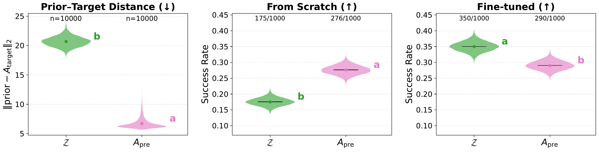
Left: the learned prior Apre is 3× closer to the target than the Gaussian in squared norm. Middle: training from scratch, Apre significantly outperforms the Gaussian. Right: after fine-tuning a pretrained LBM, the Gaussian matches or exceeds Apre.
Modern robot imitation learning increasingly relies on generative policies based on diffusion or flow-matching models, which generate actions by transforming samples from a prior distribution. A key question is whether the choice of prior matters. Replacing the standard Gaussian with a closer-to-target, non-Gaussian prior has been shown to substantially improve performance when training from scratch.
A natural next step is to ask whether these gains transfer to fine-tuning pretrained Large Behavior Models (LBMs) such as LBM 1.0, π0.5, and GR00T N1.5. Surprisingly, we find that this is not the case. Across over 100K simulation rollouts and 1,250 hardware rollouts, non-Gaussian priors yield statistically indistinguishable or worse fine-tuning performance than a standard Gaussian.
Diagnostic analyses suggest why: fine-tuned policies produce similar action predictions across priors, despite their encoder embeddings diverging substantially. A learning-rate ablation confirms that encoder training is the dominant factor, substantially outweighing the effect of prior choice.
We compare seven prior variants: the standard Gaussian, three we propose (built directly from the pretrained LBM with no auxiliary training), and three baselines from the literature.
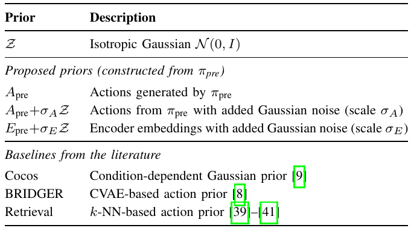
Four experimental settings test our research questions:
Plotting convention. We compare policies with a formal statistical test and summarize the result with a compact letter display (CLD). Each method is annotated with one or more letters: methods that share a letter are statistically indistinguishable, while methods with no letter in common are statistically separable. Letters are computed independently within each comparison group (e.g., within each data fraction).
With a prior built to be measurably close to the target, Apre significantly outperforms the Gaussian from scratch, but the advantage vanishes entirely once we fine-tune a pretrained LBM.
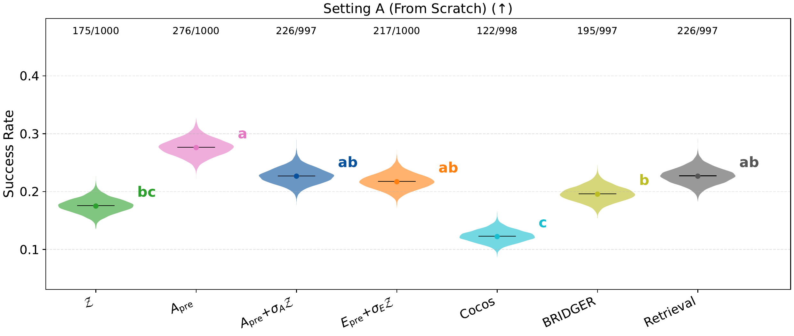
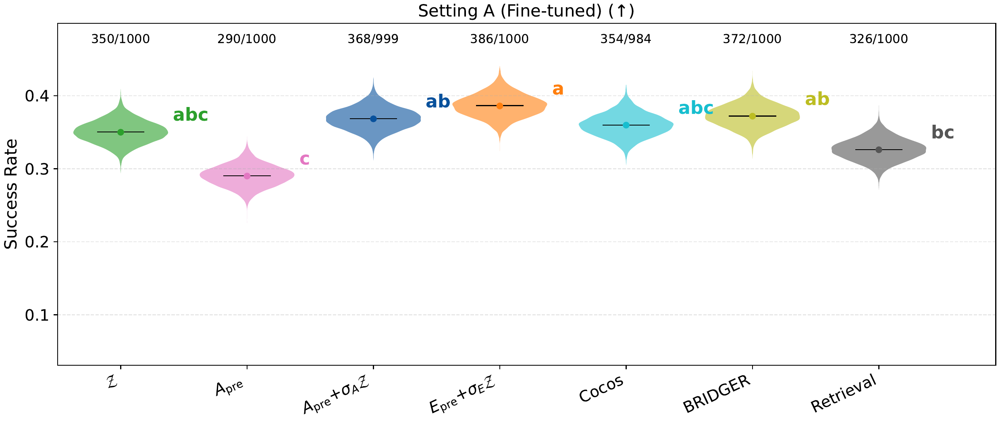
At every fraction from 25% upward, all prior variants are statistically indistinguishable. The one exception is the 5% regime, where embedding-space noise (orange) outperforms the Gaussian.
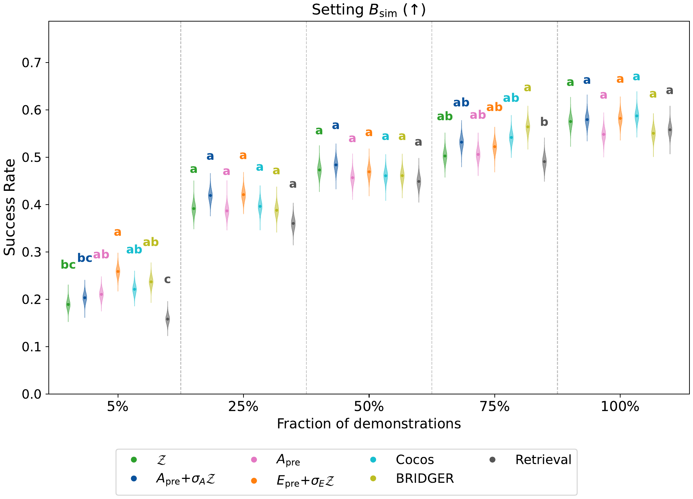
On five bimanual FR3 tasks with blinded A/B testing (1,250 rollouts), the prior again has no statistically significant effect: four of five priors share the same group. BRIDGER is the sole outlier, due to training instability.
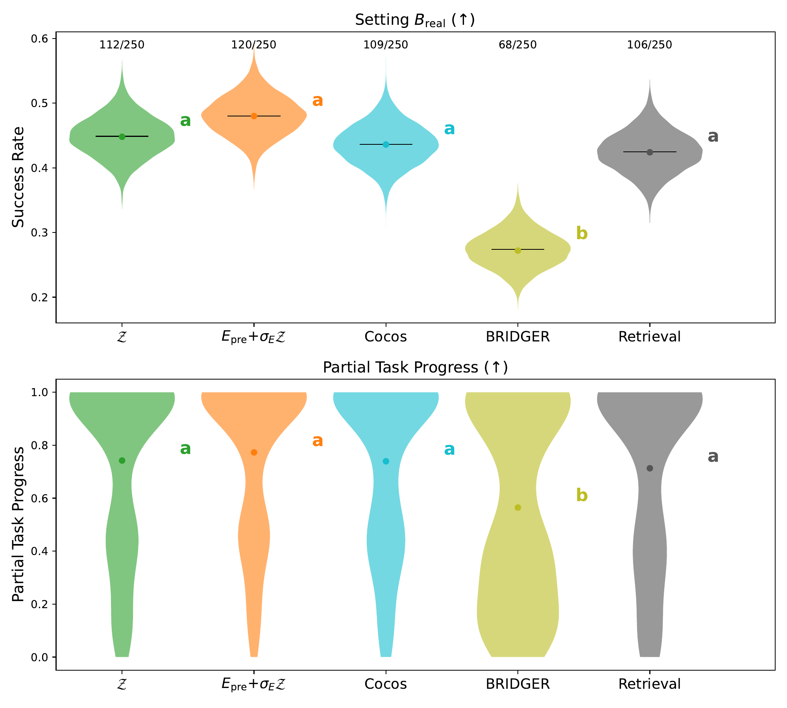
Both VLA architectures show the same pattern: the Gaussian ties at the top, while pure learned priors degrade due to a domain gap between pretraining and fine-tuning data.
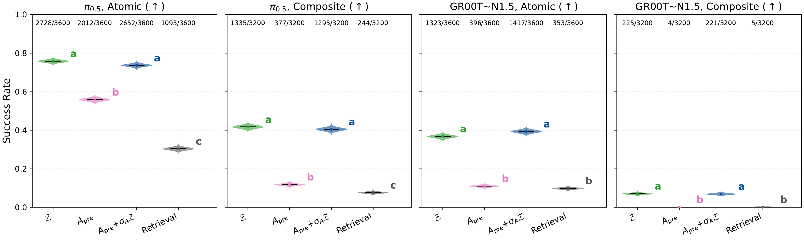
Key insight: Different priors lead to structurally different encoder solutions of equivalent quality. The prior governs how much the encoder restructures, but not the quality of the final result. Once the encoder is sufficiently well-pretrained, it dominates the transport regardless of where the flow starts.
Using LogME (a training-free measure of how predictive the encoder's features are of target actions), we find that all priors yield indistinguishable feature quality at every data fraction.
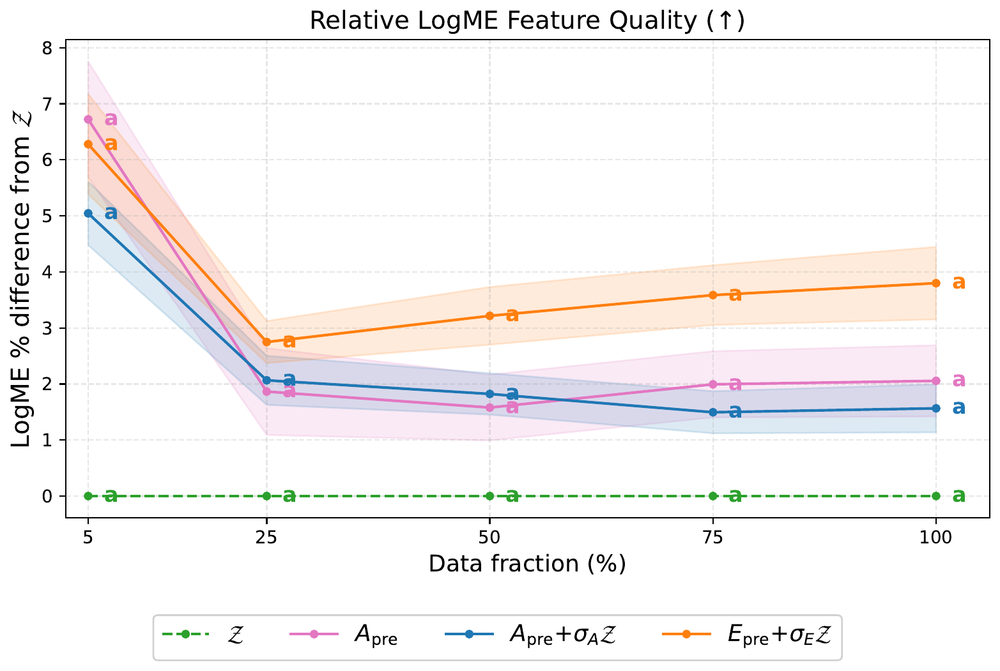
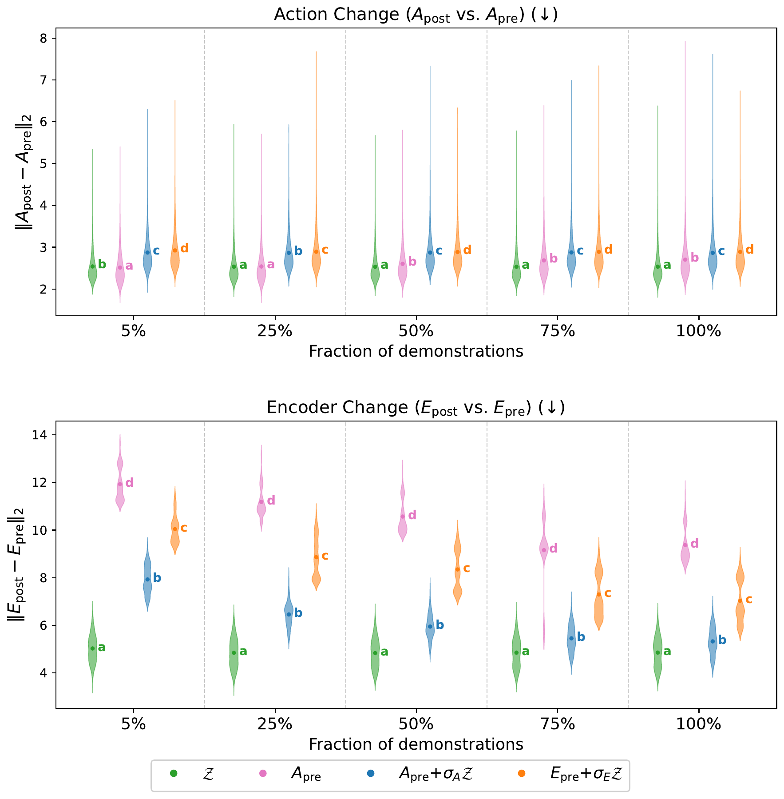
A learning-rate ablation reveals the key driver: degrading the encoder's learning rate to 1/10 hurts performance far more than any change of prior, in both simulation and on hardware.
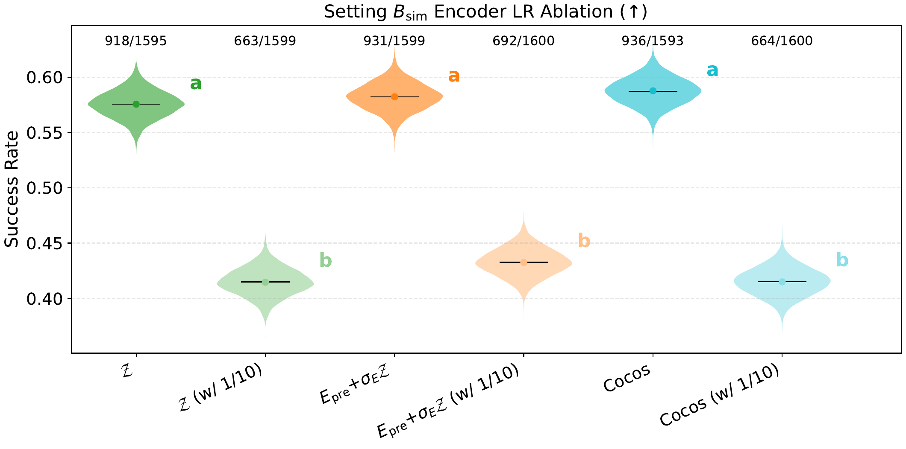
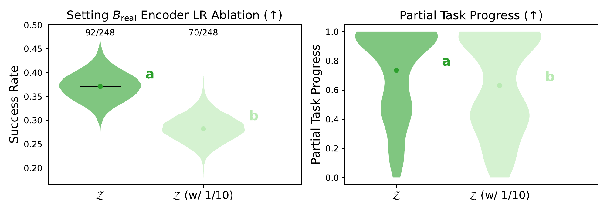
@article{xu2026gaussian,
title = {The Gaussian Is Enough: Flow-Matching Priors Do Not
Help When Fine-Tuning Large Behavior Models},
author = {Xu, Chen and Shah, Rishi and Kress-Gazit, Hadas
and Nishimura, Haruki and Itkina, Masha},
year = {2026},
}